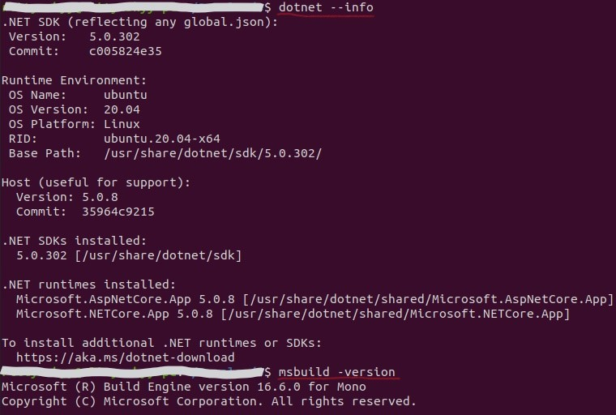
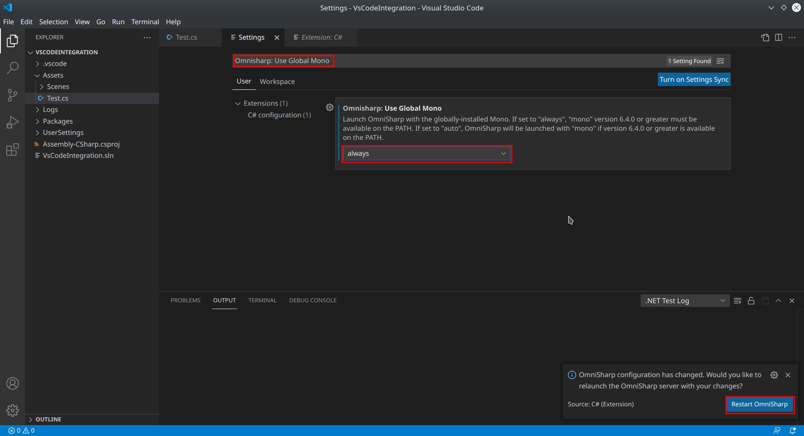
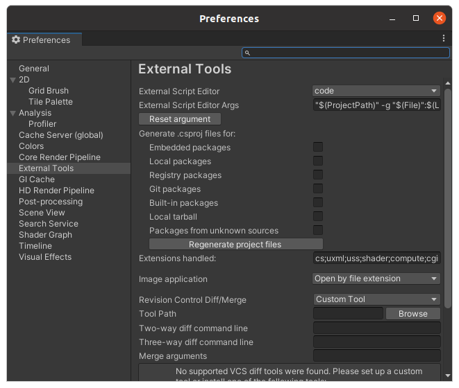
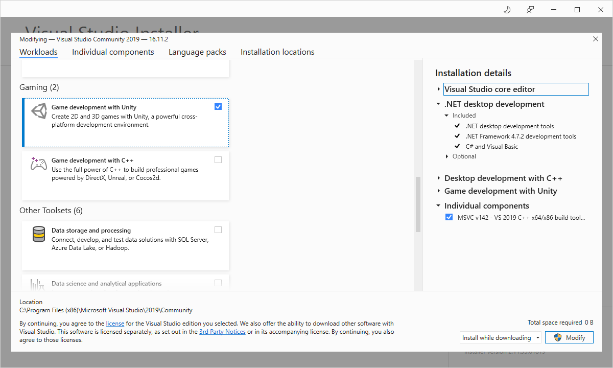
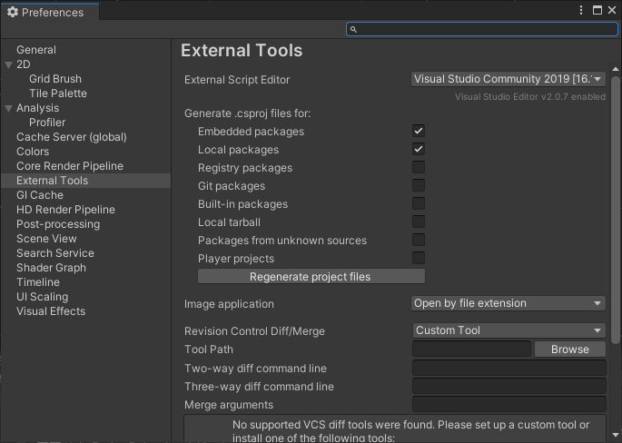

Debugging scripts#
This document provides instructions on setting up Unity and IDEs for debugging C# Unity scripts.
Table of Contents
Debugging Unity scripts using VS Code (Ubuntu) top#
Setup top#
-
Install Mono using instruction from official website.
-
Run
dotnet --infoandmsbuild -versioncommands in terminal, output should be similar to the picture below (your versions might be different).
-
Install VS Code.
-
Install
C#andDebugger for Unityextensions in VS Code. -
Open up VS Code settings via
File menu -> Preferences -> Settingsand search forOmnisharp: Use Global Monoand set it toalways. ClickRestart Omnisharpfrom the notification that appears at the bottom-right.
-
In Unity make sure that
External Script Editoris set tocode.
Debugging top#
-
In Unity double click on script of interest, VS Code should open it up.
-
Click
Debug viewicon on left pane in VS Code. -
Select
Unity editorin run configurations dropdown. IfUnity editoris missing in dropdown, look for errors in log. -
Now click
Runin VS Code, it should find active instance of Unity, attach to it, debugging starts now.
Note: If clicking Run fails to attach to Unity editor, you can try going View -> Command Palette... -> Unity Attach Debugger and select Unity instance.
If everything is setup correctly you should be able to debug scripts, use IntelliSense and code highlights.
Debugging Unity using Visual Studio (Windows) top#
Setup top#
-
Install Visual Studio (free Community Edition works fine), don't forget to select
Game development with Unityinstallation option.
-
In Unity make sure that
External Script Editoris set toVisual Studio.
Debugging top#
-
In Unity double click on script of interest, Visual Studio should open it up.
-
Click
Run(it should sayAttach to Unitynear green play icon).
Now you should be able to use full Visual Studio C# development functionality.